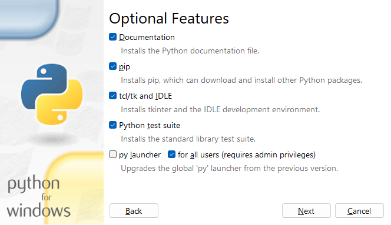

Installation
Installing gptwntranslator requires cloning the repository from GitHub and installing the tool using python's pip.
Requirements
1. Install Python 3.10 or greater
First you must ensure that you have python 3.10 or greater installed on your system. You can test this by opening a terminal and typing the following.
$
python3 --version
Should python be installed, you should see the version of python installed on your system.
If you do not see the version of python installed on your system, you can install python using the following command in the terminal.
$
sudo apt update && sudo apt install python3
If the version available in the repositories is not 3.10 or greater, you can setup a PPA to install a newer version of python. For this you will need to run through the following steps.
First install the software-properties-common package.
$
sudo apt install -y software-properties-common
Next, add the deadsnakes PPA.
$
sudo add-apt-repository -y ppa:deadsnakes/ppa
Then update the package list.
$
sudo apt update
Install python 3.10 or a newer version.
$
sudo apt install python3.10
Finally, update your PATH variable to show the new version of python.
$
export PATH="$HOME/.local/bin:$PATH"
2. Install pip
You should also have pip installed on your system. You can test this by typing the following into the command prompt.
$
pip3 --version
Should pip be installed, you should see the version of pip installed on your system.
If you do not see the version of pip installed on your system, you can install pip using the following command in the terminal.
$
sudo apt update && sudo apt install python3-pip
3. Install git
You should also have git installed on your system. You can test this by typing the following into the command prompt.
$
git --version
Should git be installed, you should see the version of git installed on your system.
If you do not see the version of git installed on your system, you can install git using the following command in the terminal.
$
sudo apt update && sudo apt install git-all
1. Install Python 3.10 or greater
First you must ensure that you have python 3.10 or greater installed on your system. You can test this by opening a command prompt and typing the following.
C:\>
python --version
Should python be installed, you should see the version of python installed on your system.
If you do not see the version of python installed on your system, or this version is lower than 3.10, you can install python by downloading it from the official website. Make sure to select a version equal or greater than 3.10.
Once downloaded, run the installer and select "Customize installation".

Then, make sure to check "pip".
Finally, select "Add Python to environment variables" and click "Install".

Once done, follow through to the next steps.
2. Install pip
You should also have pip installed on your system. If you installed python following the steps above, pip should be installed by default. You can test this by typing the following into the command prompt.
C:\>
pip --version
Should pip be installed, you should see the version of pip installed on your system.
If you do not see the version of pip installed on your system, you can install pip using the following command in the command prompt.
C:\>
python -m ensurepip --upgrade
3. Install git
You should also have git installed on your system. You can test this by typing the following into the command prompt.
C:\>
git --version
Should git be installed, you should see the version of git installed on your system.
If you do not see the version of git installed on your system, you can install git by downloading it from the official website.
Once downloaded, run the installer and run through the installation process. You will be presented with a lot of options but defaults should be sane enough. The only option to pay attention to is "Adjusting your PATH environment". Make sure to select "Git from the command line and also from 3rd-party software",

Proceed with the installation and you should be good to go.
Researching...
Installation
Open a command prompt and navigate to the directory where you want to clone the repository. Then, type the following command.
C:\path\to\folder>
git clone https://github.com/combobulativedesigns/gptwntranslator.git
You should now have a folder named gptwntranslator in the directory you specified. Navigate to the folder and use pip to install the tool itself.
C:\path\to\folder>
cd gptwntranslator
C:\path\to\folder\gptwntranslator>
python -m pip install .
Open a terminal and navigate to the directory where you want to clone the repository. Then, type the following command.
/path/to/folder$
git clone https://github.com/combobulativedesigns/gptwntranslator.git
You should now have a folder named gptwntranslator in the directory you specified. Navigate to the folder and use pip to install the tool itself.
/path/to/folder$
cd gptwntranslator
/path/to/folder/gptwntranslator$
python3 -m pip install .
Researching...
Configuration
All configuration is done through the config.yaml file. You can find an example config.example.yaml file in the repository, inside the config folder. You can rename it to config.yaml and edit it to your liking.
Here is a sample config.yaml file.
config:
openai:
api_key: "sk-xxxxxxxxxxxxxxxxxxxxxxxxxxxxxxxxxx"
models:
gpt-3.5:
name: "gpt-3.5-turbo"
cost_per_1k_tokens: 0.002
max_tokens: 4096
enabled: true
gpt-4:
name: "gpt-4"
cost_per_1k_tokens: 0.03
max_tokens: 8192
enabled: true
gpt-4-32k:
name: "gpt-4-32k"
cost_per_1k_tokens: 0.06
max_tokens: 32768
enabled: true
translator:
api:
terms_list:
models:
- gpt-3.5
translation:
models:
- gpt-3.5
summary:
models:
- gpt-3.5
metadata:
models:
- gpt-3.5
target_language: "en"
languages:
- en: "English"
- de: "German"
- es: "Spanish"
- fr: "French"
- it: "Italian"
- ja: "Japanese"
- ko: "Korean"
- nl: "Dutch"
- pt: "Portuguese"
- ru: "Russian"
- zh: "Chinese"
spacy:
pipelines:
- en: "en_core_web_sm"
- de: "de_core_news_sm"
- es: "es_core_news_sm"
- fr: "fr_core_news_sm"
- it: "it_core_news_sm"
- ja: "ja_core_news_sm"
- ko: "ko_core_news_sm"
- nl: "nl_core_news_sm"
- pt: "pt_core_news_sm"
- ru: "ru_core_news_sm"
- zh: "zh_core_web_sm"
The config.yaml file is divided into 4 main sections: openai, languages, spacy and translator.
OpenAI
The OpenAI section contains the API key and the models you want to use. You can find your API key in the OpenAI dashboard. You can also find the list of models available and their cost per 1k tokens. You can also enable or disable models here. The cost and max tokens are used to calculate the cost of the translation, and optimizing model usage by using the most appropriate model for the task. So make sure to update the cost and max tokens OpenAI updates them.
Should new models come out, you can add them here. As long as they use the same API endpoint, they should work. And if old models are updated in their cost or max tokens, you can update them here as well.
Translator
The Translator section contains both the models to be used for each section of the translation process and the target language. The target language should be in the same 2 letter format as the languages in the languages section.
The models section contains the models to be used for each section of the translation process. You can add or remove models from the list. The order of the models in the list is not important, as the tool will try to optimize based on cost which model to use.
Languages
The Languages section contains the list of languages supported by the tool. The
list is in the format language_code: "Language Name". The
language code should be in the same 2 letter as seen before.
The language code is used to identify the language in the config.yaml file. The language name is used to feed the prompts to the OpenAI API.
Spacy
Spacy is used as part of the translation process to improve consistency and accuracy.
The Spacy section contains the list of pipelines to be used for each language.
They are required for the tool to work, and installed as part of the setup
process. The list is in the format language_code: "pipeline_name".
The language code should be in the same 2 letter as seen before.
Copyright © 2023 Rodrigo Jauregui | Licensed under GPL v3.0 | Privacy Policy